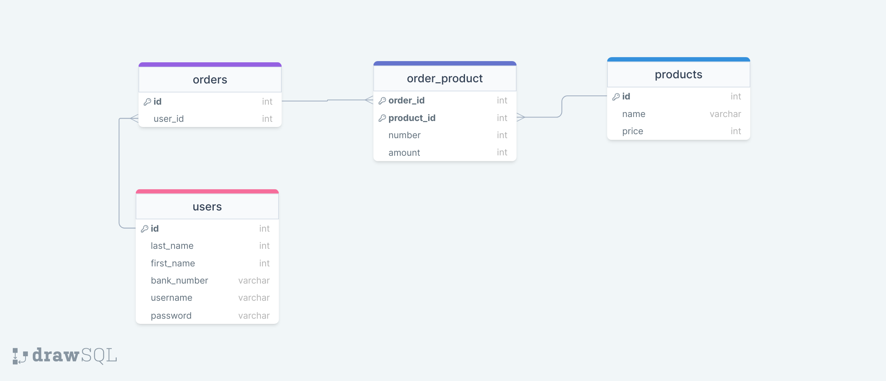

Overzicht van de lesopdrachten van week 7
Opdracht 1: Cross Site Scripting (XSS, oftewel Javascript injectie)
Voer de volgende code in als naam op de pagina XSS-form.php
<script>for (let i = 0 ; i < Date.now(); i++) alert("Sir Click Alot")</script>
Open XSS-form.php. Op regel 39 wordt de naam getoond.
Door hier gebruik te maken van de functie htmlentities(), zorg je ervoor dat javascript (die
eventueel in de naam zit) niet uitgevoerd wordt.
Pas de XSS-form.php pagina aan zodat deze beveiligd is tegen XSS
Opdracht 2: SQL Injection
Voor deze opdracht maken we gebruik van de users tabel uit de vorige les. Zorg ervoor dat er
minimaal 2 users in de database staan. Als dat niet zo is, kan je ze via de register.php pagina uit de vorige les toevoegen.
Bezoek de pagina http://localhost/PRG02-2022-2023/week7/finished/SQL-injection.php?id=2.
In de link zie je staan id=2. Vervang de 2 door het id van de users die als laatste is toegevoegd
aan de database.
Je ziet nu het profiel van de gebruiker met dat id. Ook kun je op de pagina de query zien die bij deze pagina hoort. Aan het einde van de query zie je dat het nummer van het id geplaatst wordt door middel van een variabele. We gaan nu de query beïnvloeden door achter het '=' teken een andere invoer te doen.
Zet achter het '=' teken een willekeurig id (bijv. 4) en daarna de tekst OR 1 = 1.
Je krijgt dan de volgende link:
http://localhost/PRG02-2022-2023/week7/finished/SQL-injection.php?id=4' OR '1'='1.
Je zult nu zien dat je altijd de eerste user uit de database te zien krijgt. Dit komt omdat we de SQL query
beïnvloedt hebben. De query SELECT * FROM users WHERE id=2 haalt een specifieke user op uit de
database. Maar door de toevoeging OR 1 = 1, wordt de query SELECT * FROM users WHERE id=2 OR 1 = 1.
Er staat nu: "Selecteer een gebruiker als zijn id = 2 of als 1 = 1" en dat laatste is altijd waar. Hierdoor
worden alle users geselecteerd. De code $user = mysqli_fetch_assoc($result); kiest vervolgens
altijd de eerste gebruiker.
Beveilig nu het id (dat binnenkomt via de GET-methode) tegen SQL Injection door gebruik te maken van de
functie mysqli_escape_string()
Opdracht 3: ERD veel-op-veel
Gegeven is het volgende:
De case betreft een factureringssysteem. Elke factuur bevat producten. Ook staat er van elk product
aangegeven hoeveel keer deze besteld is en de prijs per product.
Bovenaan de factuur staat de naam en het banknummer van de klant en onderaan het totaalbedrag van alle
bestelde producten bij elkaar.
Maak het ERD voor bovenstaande case (bijv met DrawSQL). Let goed op dat de informatie in de juiste tabel wordt opgeslagen en op de notatie van de relaties.